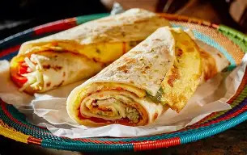

Buganda Kingdom
The largest traditional kingdom in Uganda preserving cultural heritage and royal traditions.
Uganda is home to more than 50 ethnic groups, each with unique traditions, languages, music, dances, and cultural practices.
The largest traditional kingdom in Uganda preserving cultural heritage and royal traditions.
One of the oldest kingdoms in East Africa with deep historical roots and cultural influence.
Famous for its royal heritage, scenic landscapes, and vibrant cultural ceremonies.
Ugandan food reflects the country’s agricultural richness and cultural diversity, offering a unique taste of East Africa.

A popular street food made of eggs, vegetables, and chapati rolled together.
Steamed green bananas served with meat, beans, or groundnut sauce.
Traditional dish of meat or chicken steamed in banana leaves for rich flavor.
Music and dance play a vital role in Ugandan ceremonies, celebrations, and cultural identity.
Uganda is globally known for its breathtaking landscapes and natural beauty.
Over 50 ethnic groups contribute to Uganda’s rich cultural heritage.
Ugandans are known worldwide for their friendliness and welcoming spirit.